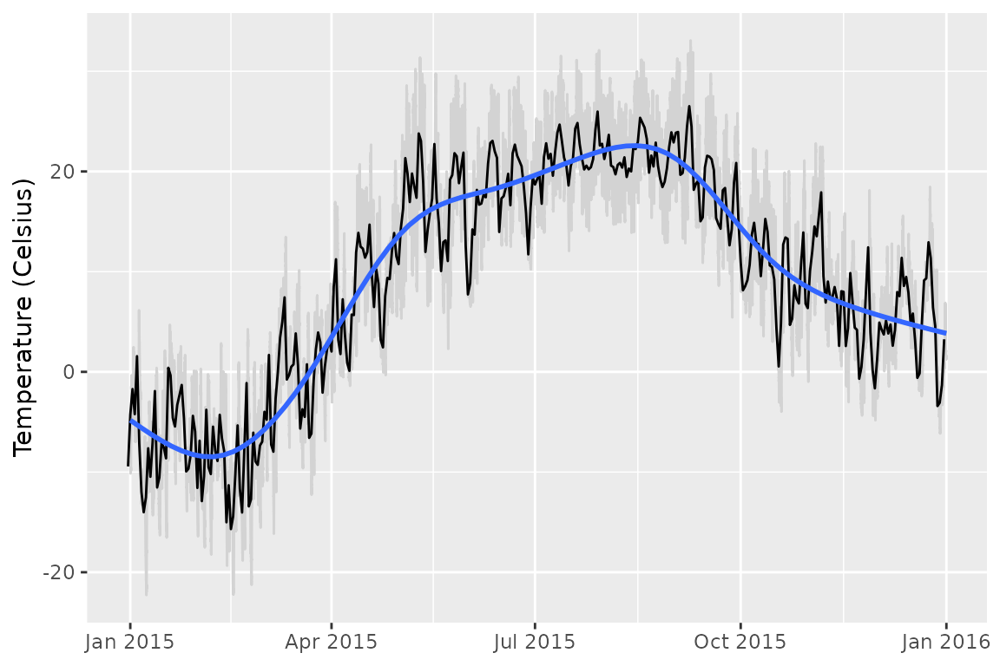
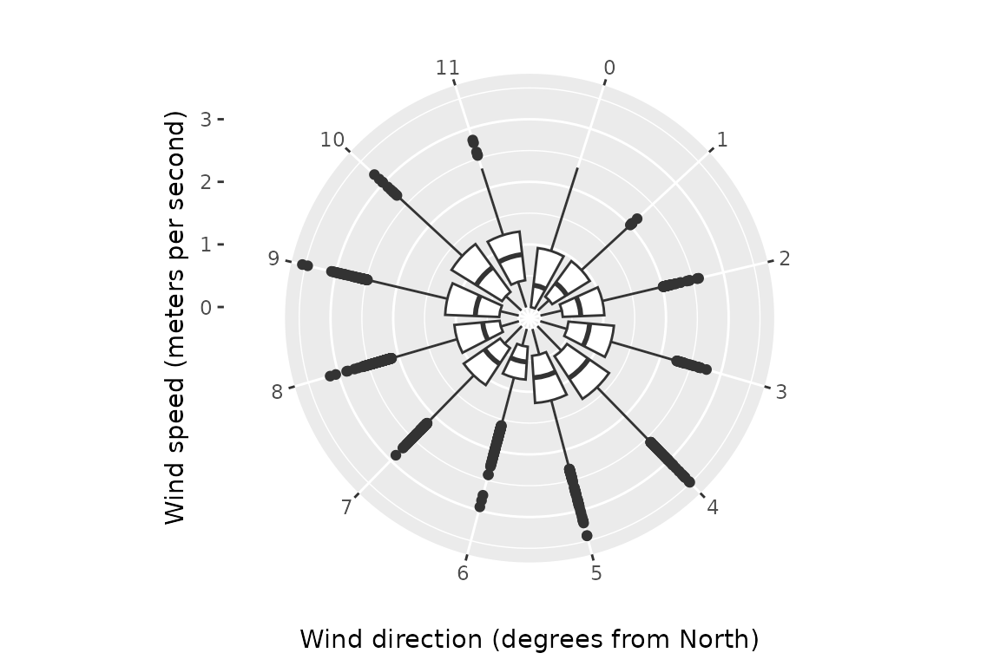
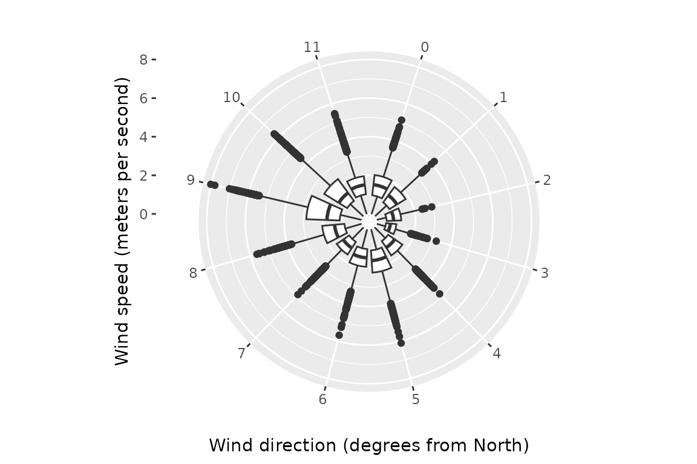
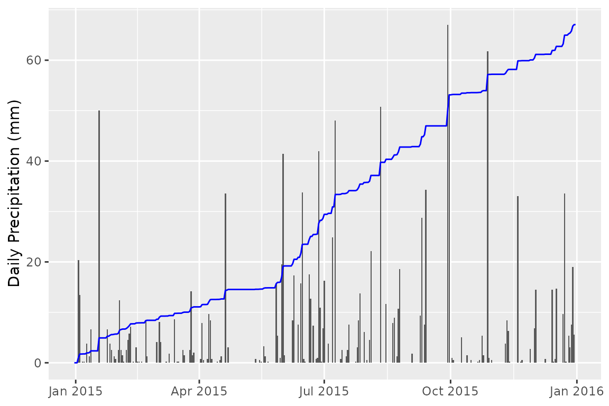

Ada & Archibald MacLeish Field Station Data
Ben Baumer, Rose Goueth, Wencong Li (Priscilla) and Weijia Zhang (Vega), Paul Wetzel
2016-04-10
Source:vignettes/macleish.Rmd
macleish.RmdMacLeish
The macleish
package for R contains weather data collected at the Ada
& Archibald MacLeish Field Station in Whately, MA, as well as
spatial data detailing various features of the property. This vignette
will illustrate how these data can be used.
Using the MacLeish Field Station weather data
Two data frames are included in the package:
whately_2015 and orchard_2015. These contain
weather data averaged over every ten minute period for the calendar year
2015. The head and tail will give you the
first (last) 6 readings from the whately weather station from 2015,
respectively.
head(whately_2015)## # A tibble: 6 × 8
## when temperature wind_speed wind_dir rel_humidity pressure
## <dttm> <dbl> <dbl> <dbl> <dbl> <int>
## 1 2015-01-01 00:00:00 -9.32 1.40 225. 54.6 985
## 2 2015-01-01 00:10:00 -9.46 1.51 248. 55.4 985
## 3 2015-01-01 00:20:00 -9.44 1.62 258. 56.2 985
## 4 2015-01-01 00:30:00 -9.3 1.14 244. 56.4 985
## 5 2015-01-01 00:40:00 -9.32 1.22 238. 56.9 984
## 6 2015-01-01 00:50:00 -9.34 1.09 242. 57.2 984
## # ℹ 2 more variables: solar_radiation <dbl>, rainfall <dbl>
tail(whately_2015)## # A tibble: 6 × 8
## when temperature wind_speed wind_dir rel_humidity pressure
## <dttm> <dbl> <dbl> <dbl> <dbl> <int>
## 1 2015-12-31 23:00:00 1.57 2.36 301. 92.4 984
## 2 2015-12-31 23:10:00 1.61 1.84 294 88.7 984
## 3 2015-12-31 23:20:00 1.61 2.37 299. 92 984
## 4 2015-12-31 23:30:00 1.59 1.93 298. 89 984
## 5 2015-12-31 23:40:00 1.54 2.08 301. 86.6 983
## 6 2015-12-31 23:50:00 1.52 2.1 294. 88.6 983
## # ℹ 2 more variables: solar_radiation <dbl>, rainfall <dbl>To access data during wider time spans, make use of the etl framework
to download the data and import it into a database. Please see the
documentation for etl_extract for further details and
examples.
help("etl_extract.etl_macleish")The 2015 MacLeish weather report
This portion of the vignette is largely a re-creation of the Macleish Field Station 2015 Weather Report.
Introduction to MacLeish Weather Stations
Weather conditions at Smith College’s Ada & Archibald MacLeish Field Station are recorded at the WhatelyMet weather station. This weather collection site is located at the end of Poplar Hill Road in Whately, Massachusetts, USA (Latitude 42 deg. 26 min. 56 sec. N Longitude 72 deg. 40 min. 50 sec. W). The meteorological instruments of WhatelyMet (except the rain gauge) are mounted at the top of a tower 25.3 m tall, well above the surrounding forest canopy. The tower is located on a local ridge at an elevation 250.75m above sea level.

The second weather data collection site, known as OrchardMet, is located about 250 m north of the first tower in an open field next to an apple orchard. Full canopy trees (~20 m tall) are within 30 m of this station. This station has a standard instrument configuration with temperature, relative humidity, solar radiation, and barometric pressure measured between 1.5 and 2.0 m above the ground. Wind speed and direction are measured on a 10 m tall tower and precipitation is measured on the ground. Ground temperature is measured at 15 and 30 cm below the ground surface 2 m south of the tower. The tower is located 258.1 m above sea level. Data collection at OrchardMet began on June 27th, 2014.
This documentation describes the weather data collected at WhatelyMet
and OrchardMet during 2015. It provides highlights of the year’s weather
as well as general trends that were observed. We hope that you find the
documentation both interesting and useful. All data reported in this
document are available through the macleish
package for R.
Variables used in this documentation:
-
when: Timestamp for each measurement set -
temperature: Average temperature (°C) -
wind_speed: Average windspeed (m/s) -
wind_dir: Wind direction (degree) -
rel_humidty: Relative Humidity (mm) -
pressure: Average atmospheric pressure (mb) -
rainfall: Main Rainfall amount per day (mm) -
solar_radiation: WhatelyMet Average Solar Radiance (W/m^2) -
par_density: OrchardMet Photosynthetically Active Radiation (sunlight between 400 and 700 nm) in average density (W/m^2) -
par_total: OrchardMet Photosynthetically Active Radiation (sunlight between 400 and 700 nm) in average total over measurement period (W/m^2)
Air Temperature
In this example we visualize the trend of average daily temperature at the MacLeish Field Station over 2015.
library(ggplot2)
library(dplyr)
library(lubridate)
daily <- whately_2015 |>
mutate(the_date = as.Date(when, tz = "EST")) |>
group_by(the_date) |>
summarize(
N = n(), avg_temp = mean(temperature),
max_temp = max(temperature),
min_temp = min(temperature)
)
temp_plot <- ggplot(data = whately_2015, aes(x = when, y = temperature)) +
geom_line(color = "lightgray") +
geom_line(data = daily, aes(
x = as.POSIXct(the_date),
y = avg_temp
)) +
xlab(NULL) +
ylab("Temperature (Celsius)")
if (require(mgcv)) {
temp_plot + geom_smooth()
} else {
temp_plot
}
As shown in the table below, the monthly average temperature in 2015 ranged from -6.4 °C in January to 21.6°C in July. The large difference in recorded temperatures between the two stations in November was the result of a loose wire that resulted in erroneous temperature readings at the OrchardMet station (see below).
monthly_w <- whately_2015 |>
mutate(the_month = month(when, label = TRUE, abbr = FALSE)) |>
group_by(the_month) |>
summarize(avg_temp = mean(temperature))
monthly_o <- orchard_2015 |>
mutate(the_month = month(when, label = TRUE, abbr = FALSE)) |>
group_by(the_month) |>
summarize(avg_temp = mean(temperature))
monthly_w |>
inner_join(monthly_o, by = "the_month")## # A tibble: 12 × 3
## the_month avg_temp.x avg_temp.y
## <ord> <dbl> <dbl>
## 1 January -6.37 -6.85
## 2 February -9.26 -9.82
## 3 March -0.873 -1.44
## 4 April 8.04 7.60
## 5 May 17.4 16.7
## 6 June 17.7 17.0
## 7 July 21.6 20.6
## 8 August 21.4 20.6
## 9 September 19.3 18.3
## 10 October 9.79 9.19
## 11 November 7.28 4.19
## 12 December 4.95 4.54The highest recorded temperature at WhatelyMet was 33.08 °C on September 8th. The lowest recorded temperature was -22.28 °C on January 8th.
## # A tibble: 1 × 8
## when temperature wind_speed wind_dir rel_humidity pressure
## <dttm> <dbl> <dbl> <dbl> <dbl> <int>
## 1 2015-09-08 14:50:00 33.1 0.999 238. 52.0 983
## # ℹ 2 more variables: solar_radiation <dbl>, rainfall <dbl>## # A tibble: 1 × 8
## when temperature wind_speed wind_dir rel_humidity pressure
## <dttm> <dbl> <dbl> <dbl> <dbl> <int>
## 1 2015-01-08 05:00:00 -22.3 0.775 296. 55.3 989
## # ℹ 2 more variables: solar_radiation <dbl>, rainfall <dbl>The average daily temperature range recorded from both stations (daily maximum-minimum) was 10.4 °C. The maximum daily temperature range was 21.1 °C on May 8th at WhatelyMet.
## temp_range
## Min. : 1.150
## 1st Qu.: 8.656
## Median :11.019
## Mean :10.851
## 3rd Qu.:13.177
## Max. :22.130The minimum daily temperature range was 2.1 °C and occurred on April 9th at WhatelyMet. However, daily temperature ranges of less than three degrees also occurred on April 7th, February 9th, June 1st, June 28th.
## # A tibble: 1 × 6
## the_date N avg_temp max_temp min_temp temp_range
## <date> <int> <dbl> <dbl> <dbl> <dbl>
## 1 2015-05-08 144 18.5 30.2 8.1 22.1## # A tibble: 6 × 6
## the_date N avg_temp max_temp min_temp temp_range
## <date> <int> <dbl> <dbl> <dbl> <dbl>
## 1 2014-12-31 30 -9.44 -8.99 -10.1 1.15
## 2 2015-04-09 144 0.103 0.66 -1.40 2.06
## 3 2015-06-15 144 14.0 14.8 12.6 2.18
## 4 2015-12-13 144 8.57 9.6 7.32 2.27
## 5 2015-06-01 144 7.73 9.35 6.53 2.82
## 6 2015-06-28 144 11.7 13.3 10.2 3.04Relative Humidity
Percent average monthly relative humidity ranged from 56.4% (March) to 94% (December). Interestingly, WhatelyMet relative humidity values were notably higher than OrchardMet values starting in August. It is unclear why this pattern occurred during the last part of the year.
monthly_w <- whately_2015 |>
mutate(the_month = month(when, label = TRUE, abbr = FALSE)) |>
group_by(the_month) |>
summarize(avg_humidity_w = mean(rel_humidity))
monthly_o <- orchard_2015 |>
mutate(the_month = month(when, label = TRUE, abbr = FALSE)) |>
group_by(the_month) |>
summarize(avg_humidity_o = mean(rel_humidity))
monthly_w |>
inner_join(monthly_o, by = "the_month")## # A tibble: 12 × 3
## the_month avg_humidity_w avg_humidity_o
## <ord> <dbl> <dbl>
## 1 January 64.6 66.5
## 2 February 61.5 63.7
## 3 March 56.4 60.0
## 4 April 57.1 59.3
## 5 May 59.8 63.9
## 6 June 79.8 79.6
## 7 July 80.1 80.2
## 8 August 88.8 80.5
## 9 September 83.1 79.5
## 10 October 85.3 74.5
## 11 November 79.9 66.3
## 12 December 94.0 56.4Wind
Wind speed and direction is measured every second and then averaged and logged every 10 minutes at both weather stations. OrchardMet measures wind midway up the forest canopy (10 m high) in a small woodland clearing while WhatelyMet measures wind 25.3 m above the ground which is above the tree canopy.
OrchardMet is located in a woodland clearing where winds are buffeted by trees of the forest canopy. Most wind comes from the west and southwest, with 67% of the time less than 1 m/s. Wind speeds did not average over 3 m/s at any time of the year.
orchard_2015 |>
mutate(wind_dir_bin = factor(floor(wind_dir / 31))) |>
ggplot(aes(y = wind_speed, x = wind_dir_bin)) +
geom_boxplot() +
coord_radial() +
scale_x_discrete("Wind direction (degrees from North)") +
scale_y_continuous("Wind speed (meters per second)")
WhatelyMet is above the forest canopy and recorded winds frequently from the northwest, north, and south during the year. Average wind velocities were higher, with 46% of the measurements falling between 1 and 2 m/s, with maximum average velocities up to 6 m/s.
whately_2015 |>
mutate(wind_dir_bin = factor(floor(wind_dir / 31))) |>
ggplot(aes(y = wind_speed, x = wind_dir_bin)) +
geom_boxplot() +
coord_radial() +
scale_x_discrete("Wind direction (degrees from North)") +
scale_y_continuous("Wind speed (meters per second)")
Precipitation
A total of 1306 mm of precipitation was recorded at WhatelyMet during 2015.
## # A tibble: 1 × 1
## total_rainfall
## <dbl>
## 1 1306.Although precipitation is relatively evenly distributed across the year, precipitation totals were highest in June and lowest in May.
monthly_w <- whately_2015 |>
mutate(the_month = month(when, label = TRUE, abbr = FALSE)) |>
group_by(the_month) |>
summarize(total_precip_w = sum(rainfall))
monthly_o <- orchard_2015 |>
mutate(the_month = month(when, label = TRUE, abbr = FALSE)) |>
group_by(the_month) |>
summarize(total_precip_o = sum(rainfall))
monthly_w |>
inner_join(monthly_o, by = "the_month")## # A tibble: 12 × 3
## the_month total_precip_w total_precip_o
## <ord> <dbl> <dbl>
## 1 January 111. 124.
## 2 February 53.1 71.6
## 3 March 51.8 49.3
## 4 April 67.3 63.5
## 5 May 39.1 31.8
## 6 June 228. 209.
## 7 July 146. 125.
## 8 August 137. 119.
## 9 September 202. 181.
## 10 October 79.0 72.9
## 11 November 55.9 53.1
## 12 December 136. 109.Since the data was recorded every ten minutes, we need to group the data daily in order to get the mean rainfall amount per day.
daily_precip <- whately_2015 |>
mutate(the_date = as.Date(when, tz = "EST")) |>
group_by(the_date) |>
summarize(N = n(), total_precip = sum(rainfall)) |>
mutate(
cum_precip = cumsum(total_precip),
cum_rescale = (cum_precip / max(cum_precip)) * max(total_precip)
)The following plot will show you how much rainfall you would have per day at macleish field station over 2015, as well as the cumulative amount of rainfall over the course of the year.
ggplot(
data = daily_precip,
aes(x = the_date, y = total_precip)
) +
geom_bar(stat = "identity") +
geom_line(aes(y = cum_rescale), color = "blue") +
ylab("Daily Precipitation (mm)") +
xlab(NULL)
February and March had the greatest number of precipitation events. Annual precipitation accumulated at a low, but fairly steady rate through June. After June rainfall levels increased and total accumulation increased sharply to the end of the calendar year. Starting in June a series of large rainfall events (40-50 mm) occurred regularly over the summer. The largest precipitation event in 2015 occurred on September 30th when 113.8 mm (8.7% of the annual total) of precipitation fell. During 2015, there were 15, 25.4 mm (1”) precipitation events; 2, 50.8 mm (2”) precipitation events; and 1, 76.2 mm (3”) precipitation event.
Using the Macleish Field Station Geographic Data
Maps
We can create a map of MacLeish using the leaflet
package and the spatial data in the macleish_layers object.
This is a list of Spatial*DataFrame objects
that contain various pieces of information about the field station,
including the location of buildings, streams, trails, and landmarks.
names(macleish_layers)## [1] "landmarks" "forests" "streams"
## [4] "challenge_courses" "buildings" "wetlands"
## [7] "boundary" "research" "soil"
## [10] "trails" "camp_sites" "elevation"These layers can be combined to provide a fuller picture of the activity at the Field Station.
library(leaflet)
leaflet() |>
addTiles() |>
addPolygons(
data = macleish_layers[["boundary"]],
weight = 1
) |>
addPolygons(
data = macleish_layers[["buildings"]],
weight = 1
) |>
addMarkers(
data = filter(macleish_layers[["landmarks"]], grepl("Met", Label)),
popup = ~Label
)